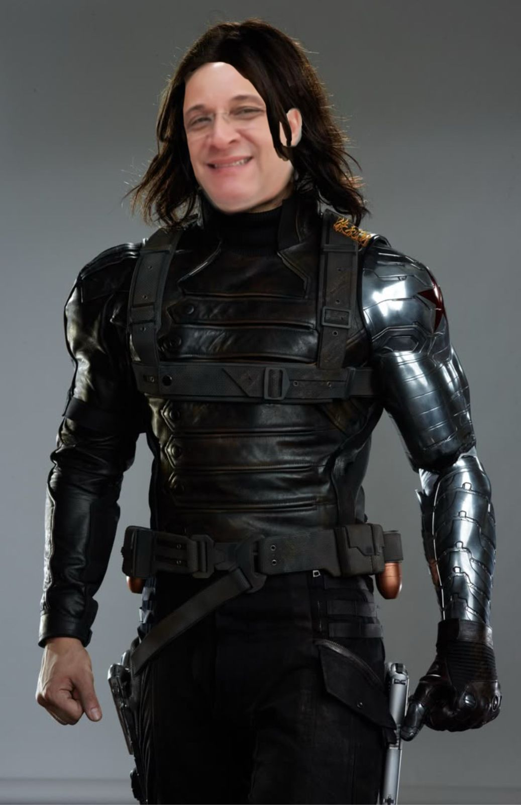

- Nome verdadeiro: Antony Stark
- Poder: Armadura de alta tecnologia com voo, lasers, superforça e inteligência artificial
- Profissão: Bilionário, inventor, empresário
- Família: Howard Stark (pai), Maria Stark (mãe), Pepper Potts (companheira)
- Origem: Criou sua primeira armadura enquanto era prisioneiro em uma zona de guerra. Depois, passou a usá-la para combater ameaças globais.
- Afiliados: Vingadores, S.H.I.E.L.D.
- Fraqueza: Humano comum sem armadura
Homem de Ferro
Capitão América
- Nome verdadeiro: Steve Rogers
- Poder: Força, agilidade e resistência sobre-humanas (graças ao soro do super soldado)
- Profissão: Soldado, líder tático
- Família: Nenhum parente próximo vivo; teve um romance com Peggy Carter
- Origem: Voluntário para um experimento militar na Segunda Guerra Mundial. Foi congelado e acordou décadas depois.
- Afiliados: Vingadores, Exército dos EUA
- Fraqueza: Conflitos com a modernidade
Hulk
- Nome verdadeiro: Bruce Banner
- Poder: Força ilimitada proporcional à raiva, resistência extrema
- Profissão: Cientista (especialista em radiação gama)
- Família: Betty Ross (interesse amoroso), Thunderbolt Ross (sogro e antagonista)
- Origem: Exposto acidentalmente à radiação gama em um experimento; se transforma no Hulk quando fica com raiva
- Afiliados: Vingadores, Defensores
- Fraqueza: Perde o controle quando está furioso
Thor
- Nome verdadeiro: Thor Odinson
- Poder: Deus do Trovão; controla relâmpagos, superforça, voo (com o martelo Mjölnir)
- Profissão: Guerreiro asgardiano
- Família: Odin (pai), Frigga (mãe), Loki (irmão adotivo)
- Origem: Filho de Odin, foi banido para a Terra para aprender humildade.
- Afiliados: Vingadores, Asgard
- Fraqueza: Arrogância e apego aos laços familiares
Viúva Negra
- Nome verdadeiro: Natasha Romanoff
- Poder: Espiã altamente treinada, mestre em artes marciais, armamento e infiltração
- Profissão: Agente secreta, assassina (reformada)
- Família: Sem laços familiares conhecidos; foi treinada pela Sala Vermelha
- Origem: Ex-agente da KGB, desertou e passou a trabalhar para a S.H.I.E.L.D.
- Afiliados: Vingadores, S.H.I.E.L.D.
- Fraqueza: Traumas do passado, ausência de superpoderes reais
Gavião Arqueiro
- Nome verdadeiro: Clint Barton
- Poder: Mestre em arco e flecha, mira perfeita, combate corpo a corpo
- Profissão: Agente secreto
- Família: Laura Barton (esposa), três filhos
- Origem: Aprendeu arco com um circo itinerante; foi recrutado pela S.H.I.E.L.D.
- Afiliados: Vingadores, S.H.I.E.L.D.
- Fraqueza: Sem poderes; depende exclusivamente de habilidade e precisão
Mente Brilhante
- Nome verdadeiro: William Sallum
- Poder: Mestre em programação para Web
- Profissão: Agente secreto
- Origem: Aprendeu a arte da programação com métodos sagrados; foi recrutado pela S.H.I.E.L.D.
- Afiliados: CEFET, S.H.I.E.L.D.
- Fraqueza: Não possui